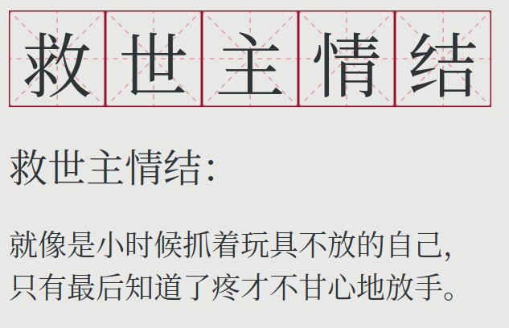

【理性鸡汤】放弃你的救世主情结

救世主情结就像是小时候抓着玩具不放的自己，只有最后知道了疼才不甘心地放手。
在一段亲密关系中，人们往往会下意识里给自己在一段关系中定位。
我们今天聊一聊在一段亲密关系中的一个常见定位：”救世主”，并且说明为什么这一定位不可取。
救世主情结简而言之就是：承担了超出自己能力的责任，并且希望通过自己单方面的努力改变对方。
当责任越界，就是灾难的开始。在计算机中，我们尚能知道避免指针的越界，因为越界往往直接触发程序的崩溃。
亲密关系中的救世主本质上就是舔狗，虽然有着光鲜的名头，然而实质却依旧卑微。
很多来找笔者咨询的人都被同样的问题所困扰：一段感情中，其中一方希望这一段感情让双方都一起进步。然而对方并没有跟着”进步”的意愿，结果两者矛盾越来越多。一方觉得苦口婆心，费力不讨好，而另一方则觉得受到了强迫。
往往在这一情形中，男女的策略不同：女生希望用真心感化对方，而男生希望通过讲道理来说服对方。然而策略不同，性质一样。
而更为恐怖的是，碰壁往往会强化救世主情结，陷入恶性循环。用炫酷的术语来说就是：沉没成本带来的赌徒心态。
曾经有一位帅气的小哥哥来咨询笔者情感问题。他经常受到女友的家暴，而当我问到为什么不分手的时候，他说到：
“再给我一点时间，我可以慢慢感化她。她这个样子，如果我跟他分手那么就没人要她了。在这种情况下，我不救她谁救她？更何况，我都已经付出了那么多”。
笔者自诩是一个经验丰富的情感咨询师，但在听到了这个故事之后依然默默低下了头反思自己想象力的匮乏。这种看似只在段子里出现的“活久见”以及“不分手留着过年”情节在现实中的确存在。
甚至更有邪恶的灵魂，刻意利用对方的救世主情结，并且由此做到精神操控。但是这已经属于法治专栏的话题，超出了本文的范畴。
遇到这样的咨询者，我往往会半开玩笑地说：”您这又当父母又当伴侣的，会不会觉得累？”。这在我们看来是一句玩笑话，但是对一部分咨询者来说，仿佛触及了他们藏在内心深处的苦楚，并且再也克制不住自己的泪水，放声大哭。
（舔）狗拿耗子，多管闲事
从这里我们已经可以看出来问题所在：救世主情结实际上就是自私的一种表现，强行把自己的意愿以及对于”好”的标准强加给别人。而这样子的后果往往是事情的恶化。
其实在恋爱关系中有救世主情结的人都是比较矛盾的个体，往往善良却又自私。
用另一个角度来说，就是对人际关系的尺度不了解，用俗话来说就是“狗拿耗子多管闲事”。拥有救世主情结的人往往过分地把别人的事当作自己的事，而在亲密关系中尤甚。他们往往觉得自己有责任帮助对方成为更好的人，且无视对方的意愿。
所以说，救世主们确实善良，因为有责任心，把别人的事能够当做自己的事。但是他们也的确自私，因为他们把自己认为的“好”当做普适的定律。
拿捏不准人际关系的边界，在任何语境下都是灾难。
笔者喜欢拿救落水者这一例子来比喻救世主情结：如果救人者自己能力不够，那么最后自己可能也会陷进去，一尸两命。
但是救落水者这一例子并不能准确比喻救世主情结，原因就在于救世主情结的危害更大。救世主情结如果使用不当，那么就很有可能好心帮倒忙：救世主情结让一个人在牺牲了自己的同时也在害对方。也就是说，很多时候，救世主情结以及相关的行为反倒会害了对方。这就导致了虽然意愿是好的，但是最终的结果是损人不利己。
一个典型的行为就是为了包容对方而逐渐失去自己的底线。这种娇惯跟捧杀如出一辙：通过温水煮青蛙的方式让对方失去对真实世界的感知，以至于在人生中最终被社会教做人。
而更恐怖的是，当一个人因为包容而失去了底线，那么对方不会念好，反而只会习以为常。这跟药品的耐受如出一辙：包容就像是药品的摄入量，剂量的增大带来的是脱敏，以至于下次需要更大的剂量才能达到一样的效果。而这是一个无底洞。
道理的推广：子女教育
救世主情结不仅仅出现在恋爱关系中，在子女的教育中也常常存在。
有很多人将孩子当做了自己梦想的载体，也就是说，为了孩子实际上是为了弥补自己生命中的遗憾。例如，有的家长逼迫孩子学乐器，为的就是弥补自己热爱音乐却没有机会学习的遗憾。这可能会导致压迫。
也有很多人宠溺自己的孩子，这其实上也是为了弥补自己生命中的遗憾，让孩子不再吃自己吃过的苦。这可能会导致纵容。
压迫和纵容，殊途同归。而这所有的举动都有一个共性：自以为是，导致动机很好，后果很差。
救世主情结，害人害己。
回到恋爱关系中，我们要逐渐认识一点：
这是一个没有救赎的世界，上天选中或者是放弃一个人，在这个人出生的那一刻就已经决定。
没错，这就是大名鼎鼎的加尔文学派中的“神选”（divine election）这一概念。但是这一道理用在恋爱中，也丝毫不违和，因为恋爱中的人和宗教中的人都遵循同一套人性规则。而恋爱本质上也跟修行无异：相互扶持则为救赎，终将羽化飞升。相互磨损则为堕落，永坠无间炼狱。这也是为什么在艺术作品中，恋爱可以直通先天，震动三界：不论是浮士德，还是罪与罚，亦或是牡丹亭。
承认人各有命，如果自己的救世主情结没有得到回应，也就是说对方根本不需要你的帮助，那么就不要自讨没趣。最好的方式还是趁早转身离去，及时止损，或许还能留住一点记忆中的美好。不放手，不仅容易失去一切，还容易不得house。
结语：什么样的相处才算好
不忘初心。
越不在乎输赢的人活得越潇洒
或许因为太过于自然而然所以难以意识到，很多人最初的相互吸引就是因为相处没有顾虑，如同无忧无虑的小伙伴。但在一起了之后因为责任越来越大，反而失去了最初无忧无虑的状态。
不忘初心，指的就是不忘最初相识时的自然，喜悦以及心动。这一状态跟救世主情结相对应，我们可以将其戏称为“小伙伴情结”。在这一状态中，没有强制且越界的责任，有的只是自发的相互激励，相互欣赏，以及携手共进。
相关阅读：